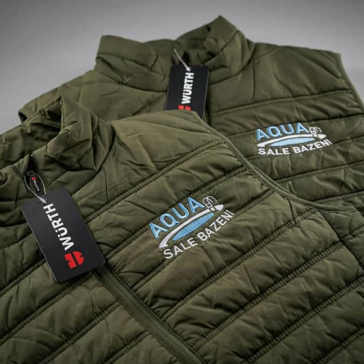
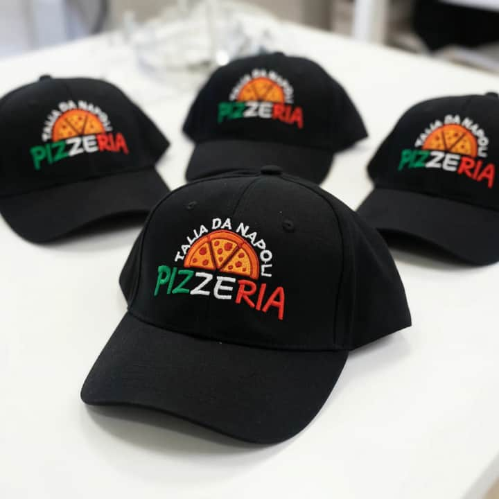
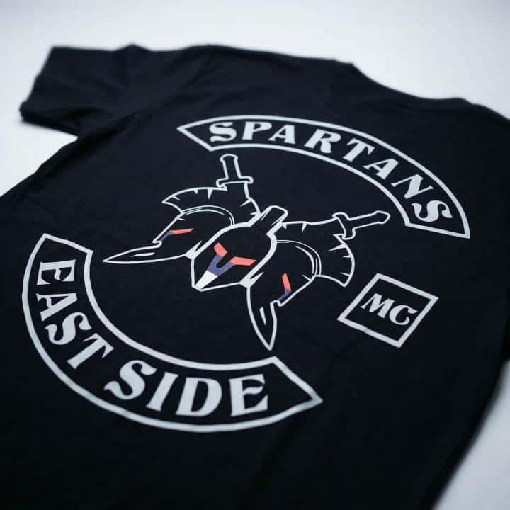
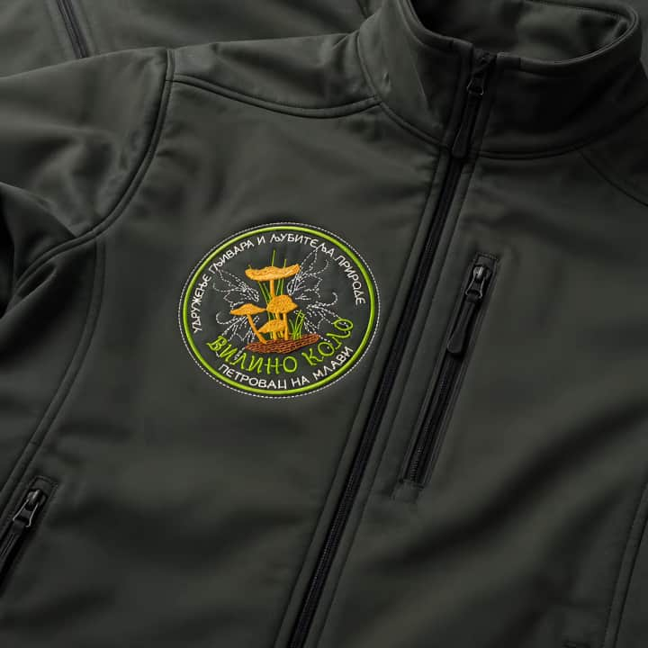

Praktičan vodič kompanije ADD VERT
Kako da vaša firma izgleda ozbiljnije
5 praktičnih odluka za profesionalno brendiranje radne odeće, uniformi i promotivnog tekstila.
Saznajte šta prvo treba brendirati, kada izabrati mašinski vez, kada DTF štampu i koje greške umanjuju profesionalni utisak firme.
Šta prvo treba brendirati
Mašinski vez ili DTF štampa
Pet grešaka koje treba izbeći

MAŠINSKI VEZ I DTF ŠTAMPAADD VERT
01 / 07
Odluka 1 / Zašto početi
Vaša odeća govori o firmi pre nego što zaposleni progovori
Klijenti ne procenjuju firmu samo po proizvodu ili usluzi. Uočavaju i kako zaposleni izgledaju, komuniciraju i predstavljaju kompaniju.
Prepoznatljivost
Kada je zaposleni jasno obeležen, klijent ga lakše povezuje sa firmom — bilo da dolazi na teren, radi u prodajnom prostoru ili učestvuje na događaju.
Doslednost
Isti modeli odeće, boje i položaji logotipa ostavljaju utisak uređenog sistema. Dovoljno je da se vidi da je izbor napravljen namerno.
Poverenje
Profesionalan izgled ne zamenjuje dobru uslugu, ali može da pokaže da firma vodi računa o detaljima pre prvog razgovora.
Brendirana odeća pomaže da dobra usluga izgleda jednako profesionalno kao što zaista jeste.
Neusaglašen izgled
Različiti artikli, položaji znaka i boje bez zajedničkog sistema mogu ostaviti utisak improvizacije.
Dosledan poslovni izgled
Jedna logika izbora — model, boja i položaj logotipa — čini tim lakšim za prepoznavanje.
ADD VERT / PRAKTIČAN VODIČ02 / 07
Odluka 2 / Gde početi
Ne morate brendirati sve. Počnite od onoga što klijenti najčešće vide.
Za svaki artikal postavite tri pitanja: da li ga klijenti često vide, da li ga zaposleni redovno nose i da li će dovoljno dugo trajati?
| Delatnost | Prvi prioritet | Sledeći korak |
|---|
| Servis i zanatska firma | Polo ili radne majice | Duksevi i jakne |
| Restoran i kafić | Kecelje i majice | Košulje ili polo majice |
| Ordinacija i salon | Tunike ili uniforme | Peškiri i mantili |
| Hotel i apartmani | Peškiri i uniforme | Bade-mantili i dekorativni tekstil |
| Prodavnica | Majice ili prsluci | Duksevi i jakne |
| Klub i udruženje | Majice i duksevi | Kape, trenerke i amblemi |
Najbezbedniji početak: jedan kvalitetan model odeće, jedna boja, jedan položaj logotipa i količina dovoljna za redovnu upotrebu i zamenu.
Tabela je smernica, ne pravilo. Vaš posao, prostor i način rada određuju najbolji početak.
ADD VERT / PRAKTIČAN VODIČ03 / 07
Odluka 3 / Izbor tehnike
Prava tehnika zavisi od logotipa, materijala i načina upotrebe
Mašinski vez nije uvek bolji izbor, kao što DTF štampa nije samo „jeftinija varijanta“. Dve tehnike rešavaju različite potrebe.
Izaberite mašinski vez kada
- želite diskretan i reprezentativan izgled
- brendirate polo majice, jakne, kape ili peškire
- važni su tekstura i reljef konca
- logo nema gradijente ni veoma sitan tekst
Izaberite DTF kada
- dizajn ima mnogo boja ili sitnih detalja
- potrebna je veća ili složenija grafika
- važna je vizuelna preciznost motiva
- dizajn sadrži gradijente ili ilustracije

Mašinski vez: tekstura, reljef i reprezentativan utisak.

DTF štampa: precizan prikaz složenije grafike na tekstilu.
Konačnu preporuku treba napraviti nakon pregleda logotipa, tekstila, veličine aplikacije i načina održavanja.
ADD VERT / PRAKTIČAN VODIČ04 / 07
Odluka 4 / Izbegnite greške
Pet grešaka zbog kojih brendirana odeća deluje manje profesionalno
01
Prevelik logo
Veći znak nije automatski uočljiviji. Na grudima je često dovoljan manji, jasno postavljen logo.
02
Previše informacija
Telefon, web adresa, slogan, mreže i lista usluga ne moraju svi stati na jedan komad odeće.
03
Neodgovarajući kontrast
Tamni logo na tamnoj odeći ili svetao logo na svetloj podlozi može izgubiti čitljivost.
04
Pogrešna tehnika
Gradijenti i sitni detalji nisu dobri za svaki vez; veoma mali vez može deformisati tanak materijal.
05
Nedoslednost
Različite veličine znaka, modeli odeće i položaji aplikacije mogu učiniti da tim izgleda neusaglašeno.
Profesionalno brendiranje nije pitanje koliko elemenata možete dodati, već koliko je malo elemenata potrebno da bi firma bila jasno prepoznatljiva.
ADD VERT / PRAKTIČAN VODIČ05 / 07
Odluka 5 / Sledeći korak
Napravite osnovni plan brendiranja za 15 minuta
Ne morate unapred znati svaki detalj. Dovoljno je da pripremite nekoliko osnovnih informacija za dobru procenu.
01
Odredite gde se odeća koristi
□ Rad sa klijentima □ Rad na terenu □ Prodajni prostor
□ Događaji i promocije □ Svakodnevni rad u objektu
02
Izaberite najvažnije artikle
Počnite sa jednim ili dva modela koja će se najčešće koristiti.
03
Odredite osnovne količine
Zapišite broj zaposlenih, potrebne veličine i broj rezervnih komada.
04
Pripremite materijal
Logo u najboljem dostupnom kvalitetu, željenu boju odeće, približnu veličinu aplikacije i primer stila koji vam se dopada.
05
Zatražite stručnu procenu
Pošaljite ove informacije i zatražite preporuku tehnike, materijala, položaja i veličine logotipa.
Niste sigurni šta je najbolje za vaš slučaj?
Pošaljite ADD VERT-u logo, delatnost, broj zaposlenih i približnu količinu. Dobićete konkretnu preporuku za sledeći korak.
ADD VERT / PRAKTIČAN VODIČ06 / 07
ADD VERT / PETROVAC NA MLAVI
Pretvorite logo u dosledan sistem poslovnog brendiranja
Na osnovu logotipa, vrste tekstila, količine i načina upotrebe predlažemo odgovarajuću tehniku i poziciju brendiranja.

MAŠINSKI VEZ I DTF ŠTAMPAADD VERT
07 / 07